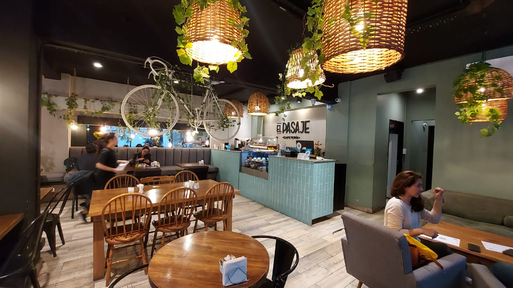

Explorando el Rincón del Café en Mendoza: El Pasaje
5 Oct de 2023

Desde hace tres años, en plena Avenida Colón, se encuentra un rincón para los amantes del buen café: "El Pasaje" @elpasajecafemza. Desde mí experiencia, es un lugar que merece totalmente la pena visitar. En mi reciente visita a principios de octubre, tuve la oportunidad de experimentar la combinación perfecta de café de especialidad y una variada oferta de comidas en la carta.
El Pasaje es un espacio que irradia calidez desde el momento en el que entras. A pesar de su tamaño modesto, el espacio es muy cómodo, su ambiente y decoración acogedores se complementan con la calidad de su café. Una característica interesante de El Pasaje es que es un café pet friendly.
Una de las cosas que más me llamó la atención es la diversidad del menú (como dato adicional: todas las promociones vienen con un jugo natural del día). No solo ofrecen merienda y desayuno, sino que también tienen un menú que incluye varias opciones de almuerzo. También hay algunas alternativas sin tacc en el menú y por un adicional de $150, podes cambiar la leche de cualquier infusión por leche de almendras, lo que es un detalle que siempre aprecio. Me parece un buen detalle a destacar, que todo el pan que utilizan en las promociones es artesanal y de elaboración propia.
En mi visita, decidí probar dos de las promociones: optamos por un cortado y un capuchino, dos jugos de naranja exprimidos, 2 medialunas y un tostado de jamón y queso en pan ciabatta de la casa. La atención fue rápida y amable, y en poco tiempo ya me encontraba disfrutando de una rica merienda.
No solo yo disfruté de esta experiencia en El Pasaje, sino que también en reseñas de usuarios de Maps
(puntuación de 4.4 estrellas) y Tripadvisor podemos ver reflejada la calidad del lugar:
- "Hoy decidí conocer este café y me llevé una agradable sorpresa… El café a una temperatura ideal, las
medialunas muy ricas y mi desayuno muy completo y rico!"
- "Hoy fui con mi hija celíaca por segunda vez y ella feliz de poder consumir algo rico y calentito cuando va."
"Gran atención y excelente balance precio calidad! Es uno de los mejores lugares para desayunar y tomar café en la zona. Almuerzos super accesibles"
Usuario de Tripadvisor
El Pasaje es un lugar que no podes dejar de visitar si te encontras por Mendoza. Si aún no has tenido la oportunidad de visitarlo, te animo a hacerlo y disfrutar de un momento agradable acompañado de un rico desayuno en este bonito café.